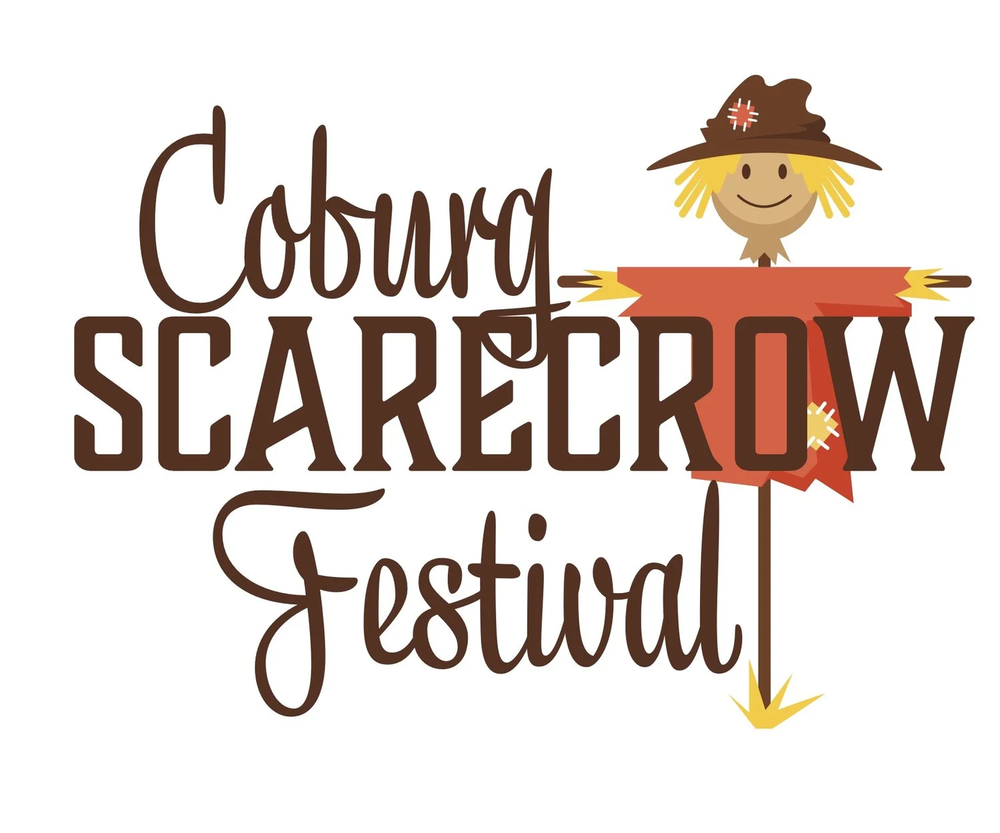

Coburg Main Street
Home
Discover
Directory
Join
Discover Coburg Events

The Coburg Scarecrow Festival
A Celebration of Community and Harvest - Month long fall celebration
When: November
Location: Around Coburg
/scarecrowfestival
Step into the vibrant community of Coburg and immerse yourself in the excitement of the Coburg Scarecrow Festival! Running throughout the entire month, this beloved festival brings the town together for a celebration like no other. Witness the streets transform into a whimsical wonderland as members of the community unleash their creativity, competing to create the most captivating scarecrow display outside their businesses and residences. From traditional scarecrows to imaginative and unique designs, the town becomes a tapestry of artistry and autumnal charm. But the pinnacle of the festival is a truly enchanting night when the entire community comes alive to celebrate the harvest. The air is filled with the melodies of live music, laughter, and the scent of delicious cuisine from the food trucks that line the streets. Families gather around fire pits to toast s’mores, the sweet aroma mingling with the crisp autumn air. Sip on warm apple cider and feel the sense of togetherness embracing the town. And this year, the Coburg Scarecrow Festival introduces two exciting additions: the Harvest Market and the Coburg Pumpkin 5k fun run. The Harvest Market showcases the bountiful produce and crafts crafted by local artisans and farmers, a true celebration of the harvest season. Meanwhile, the Coburg Pumpkin 5k fun run invites participants of all ages and abilities to don their running shoes and embrace the exhilaration of a lively fall race. Join us in Coburg this year and experience the magic of the Scarecrow Festival. Let the creativity, community spirit, and harvest delights captivate your senses. Celebrate the season in style and create unforgettable memories in this charming town that knows how to come together and celebrate the best of autumn.
 Coburg Main Street
Coburg Main Street